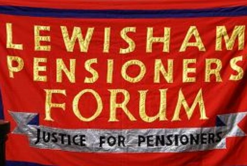

Campaigning for pensioners in Lewisham
Registered Charity No:1158175
Registered Charity No:1158175

Our aim is to ensure that the views and thoughts of people 50+ are heard
We provide a means for individuals and groups to influence local and national government where decisions may impact on the everyday life of All pensioners We also have a role diseminating information with bi-monthly meetings on topical issues and a regular newsletter to all members, as well as “Forum Specials” such as our newly established “Financial Fair” events, with expert advice on hand, or the screening of “Sell Off” and Charity Trusteeship Seminars And – there is the fun side of things too, with a range of outings and events open to Forum Members – anything from guided tours of heritage houses, cinema outings, riverside walks or behind the scenes at a brewery!Find out more about the Lewisham Pensioners Forum
Activities we provide at the Saville Centre
Monday Project
Every week in the Saville Centre 436 Lewisham High Street, SE13 6LJ On bus routes 21, 124, 160, 171, 181, 202, 284, 320 and 336 – George Lane stop. Between Catford and Lewisham a couple of blocks south of the Hospital.
Moring sessions with Jacqueline
(50p each)
Afternoon Activities (1.00-3.00pm) including:
Knit & Knatter (plus crochet & wool craft) with Pam, Mervion or Ronel Tessellated Art & Colouring for Adults with Doris
10.30-11.15: “Learn the Ukulele” 11.30-12.15: “Find your Singing Voice”